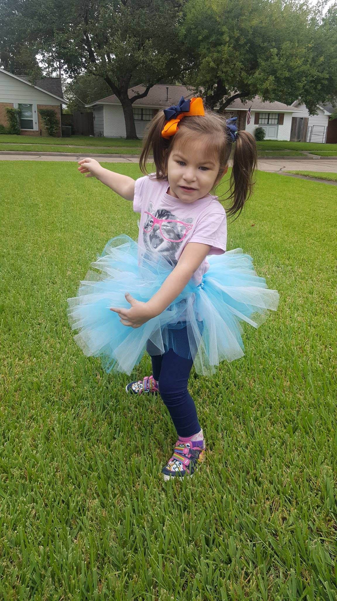

Cinnia
America Cri du Chat syndromeCinnia has 5p-/CiDuChat Syndrome, Chiari Malformation and Tethered Spinal Cord but that isn’t who she is, those labels don’t define her.
Cinnia is a spunky, fun 3 year old. She is a little sister, animal lover, and amazing spirit!
Cinnia doesn’t care what doctors say, she is blazing her own trial and we are blessed to be along for the ride!
Get involved Back to all stories